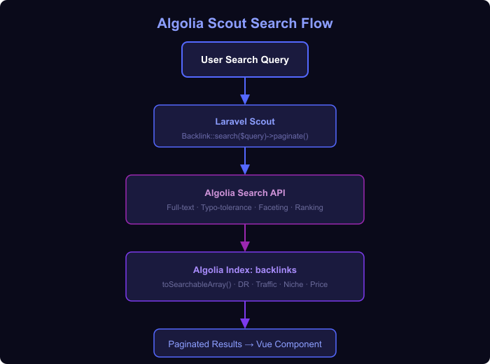

Insights<!-- POST CONTENT START --> markerssearcheye-logo.png → replace src="searcheye-logo.png" with WordPress URLsearcheye-algolia-laravel-scout-marketplace-flow-diagram.png → replace src="searcheye-algolia-laravel-scout-marketplace-flow-diagram.png" with WordPress URLsearcheye-algolia-laravel-scout-marketplace-thumbnail.png → set as Featured Image| Title | Algolia + Laravel Scout: Full-Text Search in a Link-Building Marketplace |
| Slug | searcheye-algolia-laravel-scout-marketplace |
| Focus Keyword | Algolia Laravel Scout marketplace |
| Meta Description | How SearchEye uses Laravel Scout and Algolia to power a full-text backlink marketplace with instant faceted filtering by domain rating, traffic, niche, and price. |
| Excerpt | We replaced MySQL LIKE queries with Algolia Scout to give agencies instant, faceted backlink search — faster results, zero database pressure. |
| Category | Insights |
| Tags | Algolia, Laravel Scout, Laravel, PHP, Search, Marketplace, SEO, SaaS |
| File | Size | Alt Text |
|---|---|---|
searcheye-logo.png | auto × 48px | SearchEye logo |
searcheye-algolia-laravel-scout-marketplace-thumbnail.png | 1200 × 628 px | Algolia Laravel Scout marketplace search cover image |
searcheye-algolia-laravel-scout-marketplace-flow-diagram.png | ~700 px wide | Algolia Scout search flow diagram |
Backlink Eloquent model uses the Searchable trait. toSearchableArray() includes the model's attributes plus a resolved site_type relationship and a no_backlink_select flag. Agency users filter results by domain rating, organic traffic, niche, price, and link type. Algolia Scout replaced MySQL LIKE queries — the old approach caused slow, full-table scans.How we replaced slow MySQL LIKE queries with Algolia-powered instant search, faceted filtering, and typo tolerance in SearchEye's backlink marketplace.
SearchEye's backlink marketplace lets SEO agencies browse hundreds of publisher websites. Each site has attributes like domain rating, organic traffic, niche categories, pricing, link type, and geographic focus. Users expected sub-100ms search with multi-facet filtering — something MySQL LIKE queries cannot deliver at scale without heavy indexing overhead and complex query composition.
We needed a search engine that could handle:
We integrated Algolia into the Backlink model via Laravel Scout. Scout provides a thin driver abstraction — switching the search engine later requires only a config change. Every time a Backlink record is saved, Scout automatically syncs the updated document to Algolia's index in a background job.

The flow is:
Backlink::search($query)->paginate(20) dispatches a request to AlgoliatoSearchableArray()The default Scout implementation indexes every column — including sensitive internal fields. We override toSearchableArray() to control exactly what goes into Algolia, and to resolve the site_type relationship eagerly at index time so search results include the type label without an extra database query at read time.
// app/Models/Backlink.php
use Laravel\Scout\Searchable;
class Backlink extends Model
{
use Searchable;
public function toSearchableArray(): array
{
$array = $this->toArray();
$array = $this->transform($array);
if ($this->site_type()->exists()) {
$array['site_type'] = $this->site_type;
$array['no_backlink_select'] = $this->site_type->no_backlink_select;
} else {
$array['site_type'] = null;
$array['no_backlink_select'] = 1;
}
return $array;
}
}The transform() method (a custom trait method) strips internal-only columns like writer notes and cost prices before the array reaches Algolia.
With SCOUT_QUEUE=true in .env, every model save dispatches a MakeSearchable job onto Laravel Horizon. This keeps save operations fast and prevents Algolia API latency from blocking HTTP responses. Bulk re-indexing uses Artisan's scout:import App\\Models\\Backlink command.
Algolia's faceting is configured at the index level — domain_rating, organic_traffic, site_type.name, and niche_ids are declared as facets in the Algolia dashboard. The Vue component sends the active filter state as Algolia filter expressions:
// filters passed to Laravel API → Scout → Algolia
filters: 'domain_rating >= 30 AND organic_traffic >= 1000 AND no_backlink_select = 0'Need Algolia-powered search in your Laravel product?
Talk to us about your project →